从注册引擎到对局与复盘的流程
截图在 Linux 上以简体中文界面拍摄。
注册用于对局和分析的 USI 引擎
也可以注册 ShogiBoardQ 的子模块——将棋引擎 Hayanagi。可执行文件的位置以及棋力等设置，请参阅 Hayanagi 的说明（英文）。
从菜单“设置”→“引擎设置…”打开引擎注册对话框。首次使用时尚未注册任何引擎。
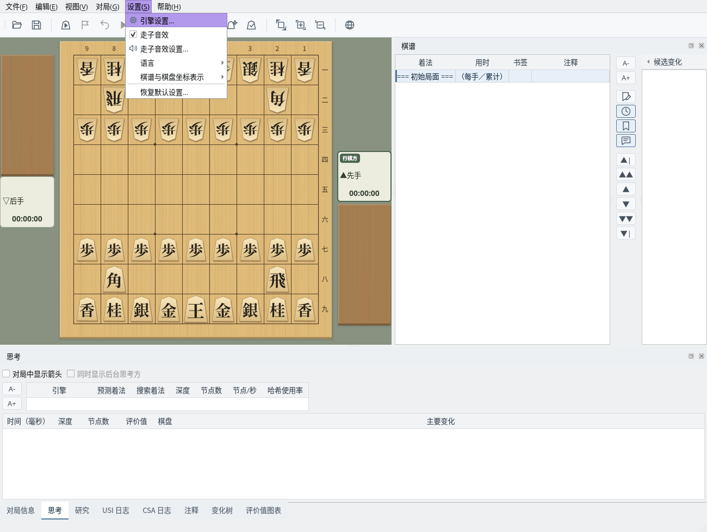
主窗口：选择菜单“设置”→“引擎设置…”
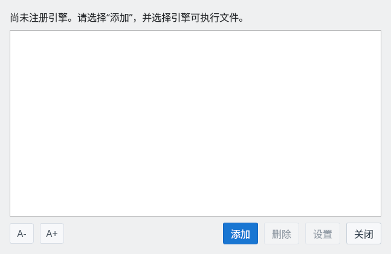
引擎注册对话框：初始状态
点击“添加”按钮，选择 USI 引擎的可执行文件。
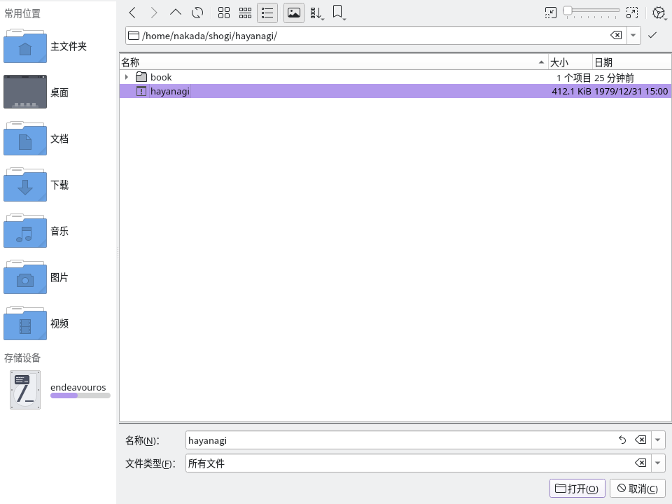
文件选择对话框：选择 Hayanagi 的可执行文件（hayanagi）
引擎被正确识别后，会添加到列表中。
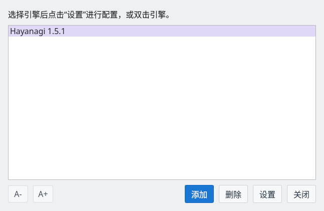
注册完成：引擎已添加到列表
点击“设置”按钮，可以更改引擎的各项选项（哈希大小、线程数等）。
在“后台思考”中启用“在对手行棋时思考”后，支持该功能的引擎会利用预测的应着，在对手行棋时继续思考。对于 Gikou 2 等未在选项列表中显示 USI_Ponder 的引擎也可以设置。原有的 USI_Ponder 设置值会被沿用；没有设置时从禁用后台思考开始。
“即使引擎未报告该选项，也发送 USI_Ponder”通常保持启用。若引擎报告不支持该选项的错误，请将其禁用。即使禁用此通知，对于支持后台思考的引擎，GUI 仍可开始后台思考。设置按引擎分别保存，并在下次启动引擎时生效。
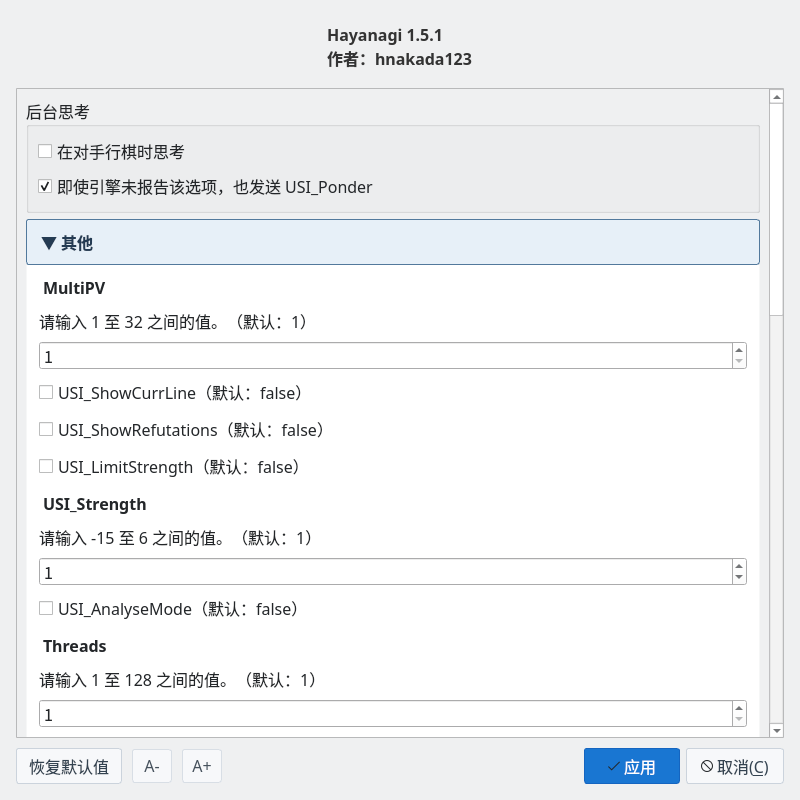
引擎设置：调整哈希大小、线程数等
可以注册多个引擎，在对局或引擎对引擎时分别使用。
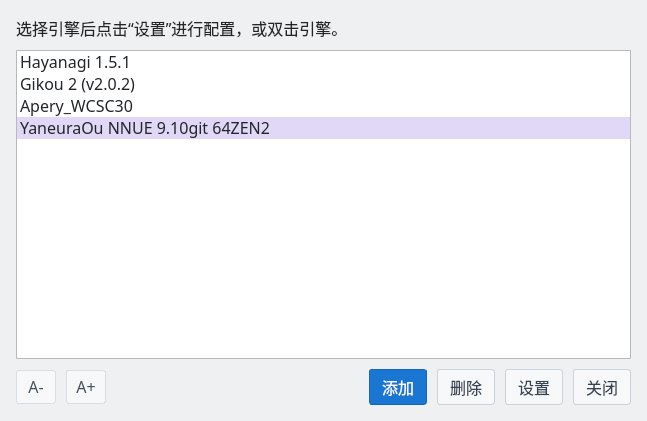
注册多个引擎：按用途选择使用
在对局对话框中设置对局条件
从菜单“对局”→“对局…”打开对局对话框，可以设置以下项目。
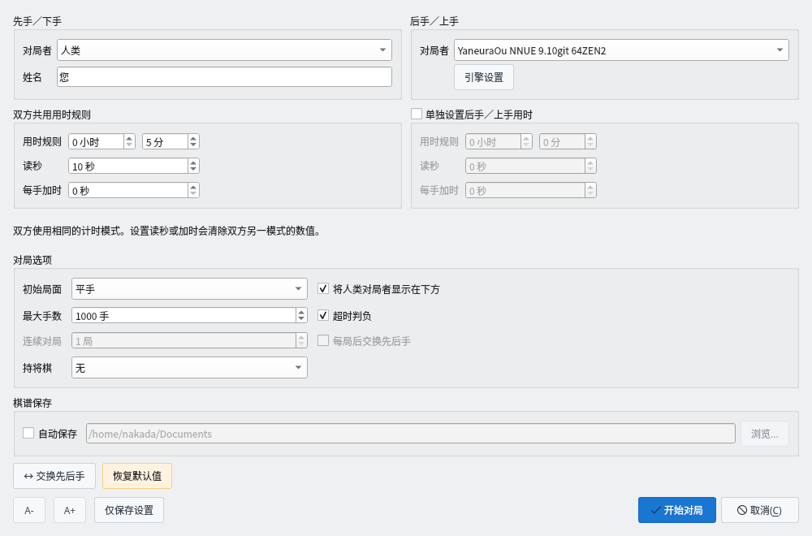
对局对话框：设置对局者、用时和初始局面等
在对局画面中实时查看棋谱和引擎的思考信息
对局开始后，“思考”标签页会实时显示引擎的思考信息。
在“思考”标签页中启用“对局中显示箭头”后，会以红色实线在棋盘上显示行棋方引擎当前的最佳候选着法。启用“同时显示后台思考方”后，会以蓝色虚线追加显示正在后台思考的引擎的应着，并在“思考”标签页中显示其假定的对手着法。后台思考的箭头表示该预测着法被走出时的应着。显示设置会被保存，不会更改引擎本身的后台思考设置。研究模式中的箭头遵循“研究”标签页的设置。
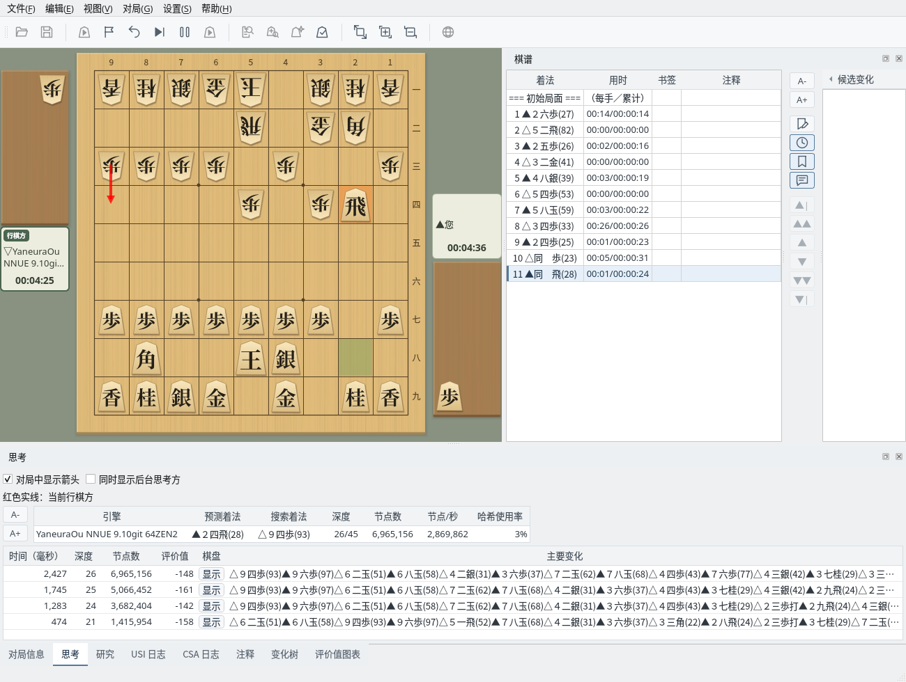
思考标签页：实时显示引擎的思考信息
在“USI 日志”标签页中，可以查看 GUI 与引擎之间通过 USI 协议进行的通信记录。
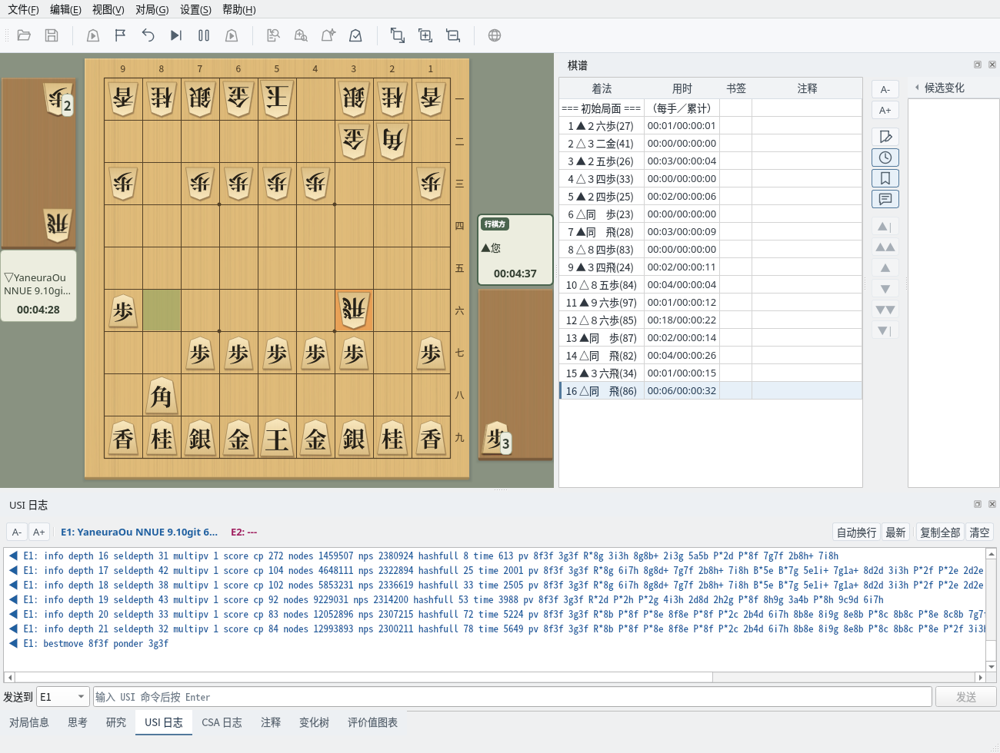
USI 日志：实时显示 GUI 与引擎之间的 USI 协议通信
在主要变化显示窗口中，可以在棋盘上回放引擎的主要变化。
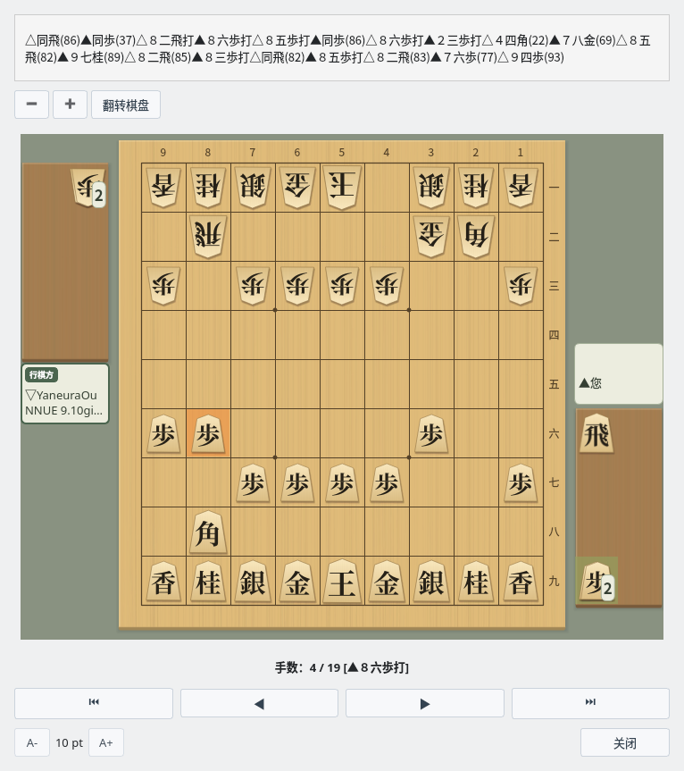
主要变化显示：在棋盘上直观呈现引擎的主要变化
通过评价值图表可以直观把握形势的变化。对局中也会实时更新。
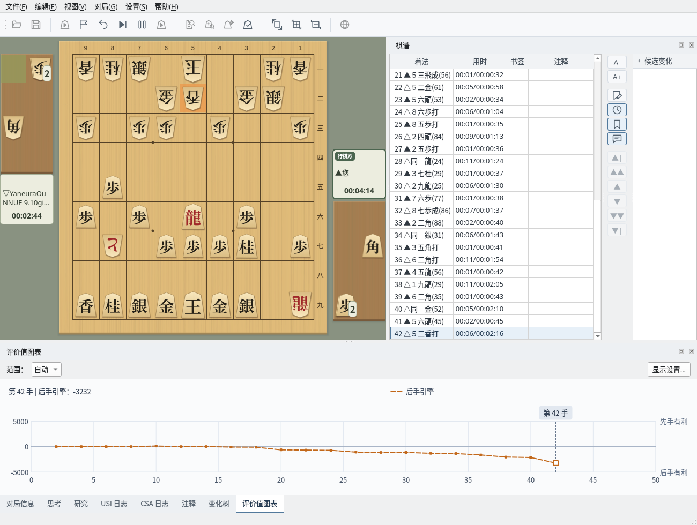
评价值图表：实时显示形势的变化
“对局信息”标签页会显示对局日期、开始时间、先手、后手、让子、用时规则、结束时间等对局信息。
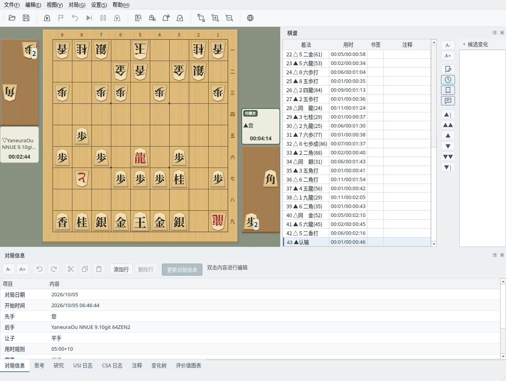
对局信息：显示对局的相关信息
“变化树”标签页不仅显示本谱，也会显示变化中的着法。对局中使用“悔棋”撤回后再走出不同的着法时，实际走出的手顺会成为本谱，被撤回的手顺作为变化保留。
对局结束后，棋盘仅供浏览，无法移动棋子。若要从中途局面继续对局，请在棋谱中选择该局面，并在对局对话框中将初始局面设为“当前局面”后开始对局。新的着法会作为变化记录。
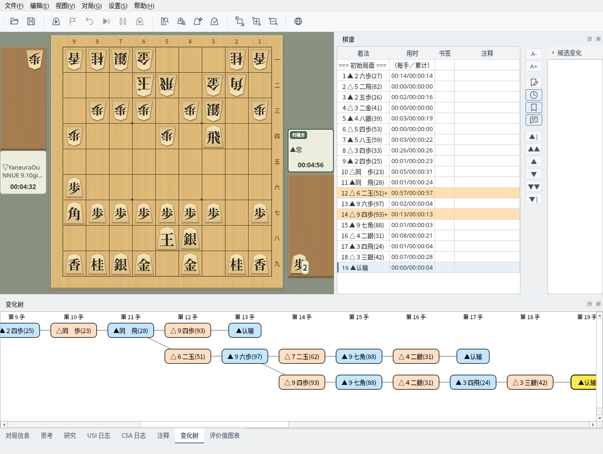
变化树：显示本谱以及其他变化的着法